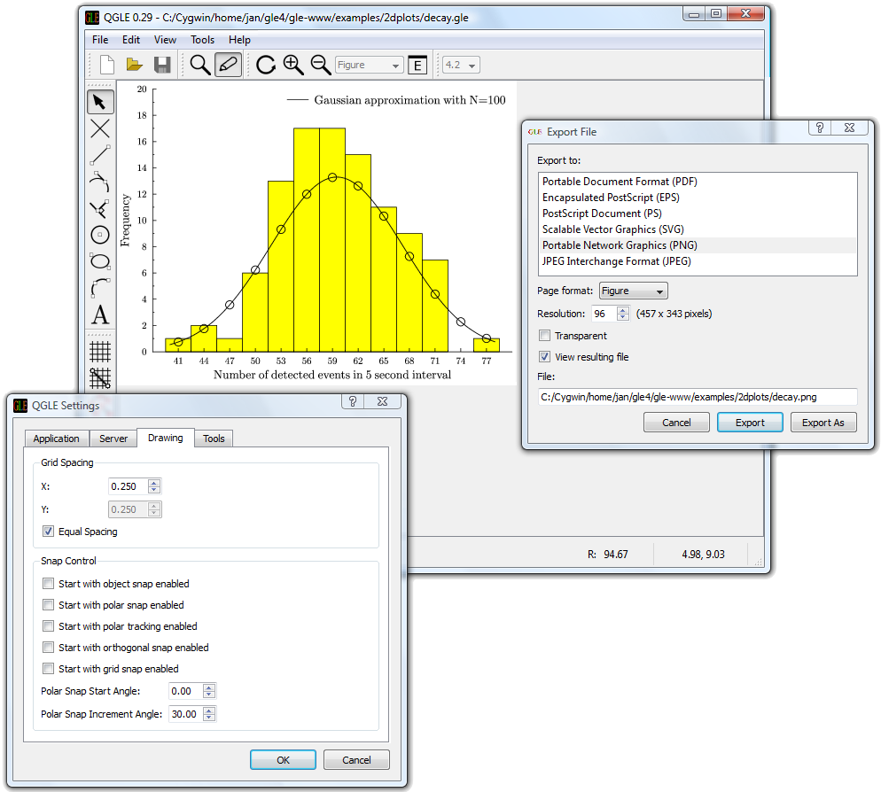

This tutorial explains how to install, configure, and run GLE on Windows.
I assume that you have donwloaded GLE-x.y.z-exe-win32.exe with x.y.z the version number. Double click this file in Windows Explorer to start the installation process. Alternatively, you can also choose Run when downloading the file from inside Internet Explorer as shown below.
If you are using Firefox, choose "Open" from the download window (you get this by pressing Ctrl-J).
Running GLE-x.y.z-exe-win32.exe will pop up the following window.

Click next. GLE will ask you the destination folder. In the example below, I'm using "C:\Program Files\Gle4\4.0.12". Including the version number has the advantage that you can have several GLE versions installed at the same time.

Click next. GLE will start installing and it will notify you that it has added the folder containing its executable to your system's search path.

Click OK. GLE will now search for installed components. The resulting screen will look similar to this one:

In my case, previous GLE versions were already installed and GLE has picked up on these. If this is your first GLE installation then you will of course only see one. GLE can also interface to GhostScript and LaTeX. The window also shows that it has detected that GhostScript is installed on my computer, but it did not detect LaTeX. I will show you later how to use GLE in combination with LaTeX and GhostScript. For now, just focus the window saying "Press enter to contunue..." and press enter. Next click Finish on the installer screen. Please take the time to browse through the readme (this is offered as an option on the last screen of the installer).

GLE should now have added a new entry titled GLE to your start menu. Clicking it pops up a menu showing the options "Command Prompt", "Readme", "Uninstall", and "Website". Click on "Command Prompt". GLE essentially is a command line application, so I will first show you how to run it from the command prompt. Later I will show how it can be invoked from your favorite editor. After you have opened the command prompt, type "gle" as in the example below and press enter.

GLE should respond as in the example above. If you instead get the message "'gle' is not recognized as an internal or external command, operable program or batch file", then the folder containing "gle.exe" was not correctly added to your system's search path during installation.
If the version number printed by GLE is not correct, then a previous version of GLE may be installed on your computer. Either uninstall that version or remove it from your system's search path (you will still be able to run it through the -v option, as discussed in the reference manual).
I will now show you how to change the search path. This is a list of folders that Windows searches for executable programs when you try to run a particular program from the command prompt. Note that normally the GLE installer should have done this for you. Only perform the next step if you saw an error message or incorrect GLE version in the previous step.
Select "Control Panel" from the start menu and click "System". Navigate to the "Advanced" tab and click the "Environment Variables" button. Select the variable "PATH" and click the "Edit" button. You should now have the following windows open.

Add to the "Value" field the location of the GLE executable "gle.exe". This location is the installation folder you specified during installation with "\bin" added at the end, so in my case this is C:\Program Files\Gle4\4.0.12\bin. Note that different folders in the PATH are separated with the symbol ";". You might need to change the value of PATH in either the "User" or the "System" variables.
Open a new command prompt from the GLE entry on your start menu and type "echo %PATH%" and press enter. Check that the correct location is in the list. If so, then you should be able to run GLE as discussed above. If you are unable to get this to work, then please feel free to contact the GLE mailing list to discuss the problem.
GLE takes as input a script file containing GLE commands and outputs a graph or drawing, e.g., in PostScript or PDF format, which can be included in your LaTeX or Word document.
To create the script file we need a text editor. I will be using the editor PSPad for this later in the tutorial because it is available for free. Alternatives are the Crimson Editor and the commercial editor UltraEdit. You can also try using Notepad, the editor that comes with Windows itself (in the Accessories submenu of the start menu), but this one is very limited. Note that your editor should save files in ASCII format. You may also use Word, but then you should make sure to select "Plain text (*.txt)" when you save the file.
I will be creating my example GLE script file in the folder "GLE" under "My Documents". Open your editor, type in the following GLE script, choose "Save" from the menu, create a new folder "GLE" under "My Documents" and save the file as "parabola.gle" in that folder.
size 12 8
begin graph
let d1 = (x-2)^2 from 0 to 4 step 0.1
d1 line color red
end graph
|
Note that some editors (e.g., Notepad) add ".txt" to every file you save. This way you will end up with "parabola.gle.txt". If this happens, then rename the file to "parabola.gle" using Windows Explorer (GLE only works correctly on files ending in ".gle").
Next we are going to run GLE to create a PostScript ".eps" file from our script. Open the command prompt from the GLE entry in your start menu and enter the follwing commands (replacing the argument of "cd" with the location where you saved "parabola.gle").
cd C:\Documents and Settings\jan\My Documents\GLE gle parabola.gle |
The first command "cd" changes the working folder to the folder containing our "parabola.gle" script. The second command runs GLE. Your screen should now look like the following.

GLE has created the output file "parabola.eps", as you can see in the Explorer window. To view this file, we need a PostScript viewer like the program GhostView. The following section explains how to install this program. You can skip that section if you already have GhostView installed.
Go to the GhostScript website and download GhostScript and GhostView. I will be using AFPL GhostScript 8.53. This version comes as the following two files: gs853w32.exe and gsv48w32.exe. The first one is the GhostScript library and the second one is its viewer. We will be needing both. Download and install the two files either by choosing "Run" while downloading in Internet Explorer or by double clicking them in Windows Explorer.
I have installed both programs in "C:\Program Files\Tools\GhostScript". Make sure that you select the item "Associate PostScript (.ps and .eps) files with GSview" while you install GhostView.
After you have installed GhostView, browse with Windows Explorer to the folder where you saved "parabola.gle". The output file "parabola.eps" should now have the GhostView icon. Double clicking this file will open it in GhostView. If everyting went ok, then you will now see a preview of our parabola graph.

Try making changes to the GLE script in your editor, save it, rerun GLE, and preview in GhostView until you are satisfied with the output. Note that you can use "arrow up" to recall the previous command in the Command Prompt. If you enable "Options | Auto Redisplay" in GhostView, then it will automatically reload GLE's output if you focus its window by clicking it with the mouse. Enabling "Options | EPS Clip" is also useful when previewing ".eps" files.
Try adding the following commands in the graph block of the GLE script.
title "Parabola" xtitle "x" ytitle "f(x) = (x-2)^2" |
After running GLE, your output should include the title "Parabola" at the top of the graph and axis labels. Your graph is now ready for publication ;-).
Encapsulated PostScript (.eps) files are designed to be included as figures into other documents. If you want to print your file without including it in a larger document, tell GLE to create a regular PostScript (.ps) file instead. This can be done by running GLE with the "-d ps" option.
gle -d ps parabola.gle |
Preview the resulting "parabola.ps" with GhostView. You will notice that the graph is now centered on a full page. Choose "File | Print" in GhostView to print it.
If you wish you can try running more examples from the GLE Example repository. You may also want to browse through the GLE documentation to learn more about writing GLE scripts.
GLE can create PDF, JPG, and PNG output by relying on GhostScript. First, we have to let GLE know where GhostScript is installed. This is done by running GLE with as argument "-finddeps [FOLDER]", with [FOLDER] the folder where GhostScript is installed. In my case this is (the quote marks are required because the folder contains a space):
gle -finddeps "C:\Program Files\Tools\GhostScript" |
GLE should respond with:
Running GLE -finddeps "C:\Program Files\Tools\GhostScript" (locate GLE fonts and optionally Ghostscript/LaTeX): . Found: GLE 4.0.12 in C:\Program Files\Gle4\4.0.12\bin\gle.exe (*) Found: latex.exe in '?' Found: pdflatex.exe in '?' Found: dvips.exe in '?' Found: gswin32c.exe in 'C:\Program Files\Tools\GhostScript\gs8.53\bin\gswin32c.exe' Press enter to continue ... |
Make sure that the location printed for the GhostScript executable "gswin32c.exe" is correct.
We can now create PDF, JPG, and PNG output with the following commands.
gle -d pdf parabola.gle gle -d jpg parabola.gle gle -d png parabola.gle gle -d pdf -fullpage parabola.gle |
The command with the "-d pdf" and "-fullpage" options creates a full page PDF file with the parabola graph centered. This file can be printed with Adobe Reader.
The options "-d jpg" and "-d png" can be used in combination with "-dpi X", which changes the resolution of the resulting bitmap. Try, e.g., with "-dpi 75" and "-dpi 200".
Starting from 4.0.12, GLE also has its own previewer called QGLE (written by A. S. Budden). It internally also uses GhostScript, so you have to let it know the first time you run it where GhostScript's "gsdll32.dll" is located. I.e., it will pop-up the following dialog.

Click browse and browse to the folder where you installed GhostScript. Then browse to the subfolder gsx.y\bin, with x.y the version number of GhostScript, and select the file "gsdll32.dll". In my case, the full path to "gsdll32.dll" is in "C:\Program Files\Tools\GhostScript\gs8.53\bin\".
QGLE will now pop-up a window showing "Waiting for initial connection, please wait...". This means that it is ready for input. You can now run GLE with the "-p" option to display the output in the previewer.
gle -p -dpi 150 parabola.gle |

Each time you run GLE with the "-p" option, QGLE will update its display. This is especially useful if you bind this command to a shortcut in your favorite editor as I will show next.
This section describes how one can run GLE from inside a text editor. You edit your GLE script with the editor, hit a particular shortcut and GLE compiles the script. The editor displays possible error messages in its log window and the QGLE previewer shows the modified output of your script.
I will be using the PSPad editor in this tutorial, but you can also try the Crimson Editor or UltraEdit. Please install PSPad from http://www.pspad.com using the graphical installer and start it up.
We will first add a language mode for the GLE scripting language. To do so, download the file GLE.INI by clicking this link and save it in the folder "C:\Program Files\PSPad editor\Syntax" (assuming PSPad is installed in "C:\Program Files\PSPad editor"). Next choose "Settings | User Highlighter" from PSPad's menu. This will pop-up two dialog boxes: "User Highlighter definition" and "Open". Use the "Open" dialog to open the GLE.INI file you just saved. Make sure all settings are as shown in the dialog box below. Next click "Save" on the dialog and close it by clicking "Cancel".

Choose "Settings | Highlighter Settings" from PSPad's menu and scroll down to an entry in the list on the left that reads "<not assigned>". Select this entry and activate the tab "Specification". In the list "User Highlighters", scroll down and select GLE. Now your screen should look like this:

Make sure that a green check mark is displayed before "GLE" in the list on the left of the dialog as shown above. Now select the "Compiler" tab and set all settings as shown below. Make sure the first line lists the correct location of your GLE installation. Note that one can use the button with the "..." next to it to browse for "gle.exe". The "Compiler" settings will make "gle.exe" the default compiler for our GLE language definition. By adding the "-p" option in the "Parameters" field, GLE will open QGLE to show the changes each time you compile your script from PSPad.

Open the "parabola.gle" file in PSPad and press "Ctrl-F9". This will run GLE. PSPad displays possible error messages in its log window and QGLE will show the graphical output of your script. Your screen should now look as follows.

Make some changes to the script and hit "Ctrl-F9" again. QGLE should update to reflect these changes.